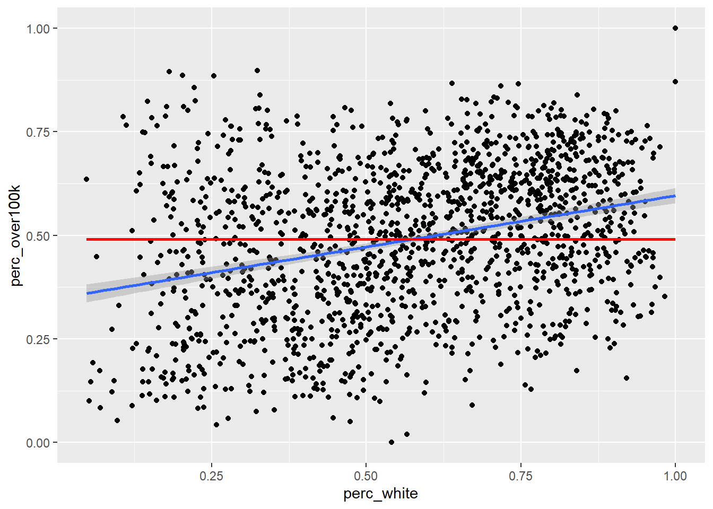
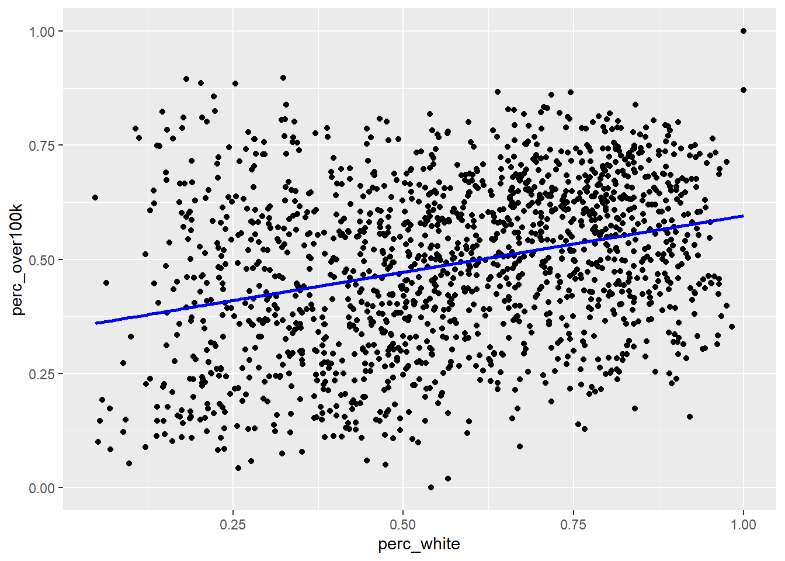
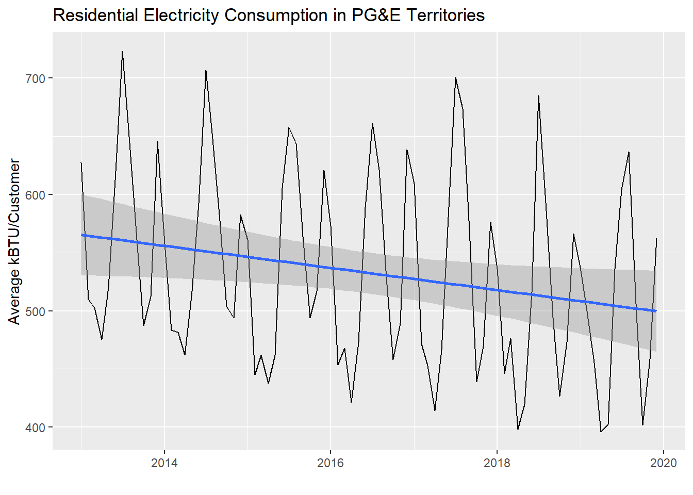

3.3 Simple linear regression
This section will not serve as a replacement for a more formal mathematical introduction to regression, but may be a good complement that lets us “peek under the hood” with some real data. You should be familiar with the idea that regression is associated with the trendline that Excel allows one to add to a scatter plot. Let’s go ahead and see how to set that up in R, and then inspect the result more closely. For our demonstration, let’s return to ACS data and compare two different variables in the Bay Area at the block group level. A regression analysis could be conceptually similar to an equity analysis as we practiced in Chapter 2, so let’s construct a similar measure. One of our equity analysis examples was comparing income vs. race. For the simple linear regression version, we need to distill both income and race into one-dimensional measures, like “% of households making $100,000 or more” and “% of households that are White Alone”, and collect these values at a granular level, in this case Census tracts in the Bay Area.
library(tidyverse)
library(censusapi)
Sys.setenv(CENSUS_KEY="c8aa67e4086b4b5ce3a8717f59faa9a28f611dab")
acs_vars_2018_5yr <-
listCensusMetadata(
name = "2018/acs/acs5",
type = "variables"
)bay_income_race_tract <-
getCensus(
name = "acs/acs5",
vintage = 2018,
region = "tract:*",
regionin = "state:06+county:001,013,041,055,075,081,085,095,097",
vars = c(
"B19001A_001E",
"B19001_001E",
"B19001_014E",
"B19001_015E",
"B19001_016E",
"B19001_017E"
)
) %>%
transmute(
tract = paste0(state, county, tract),
perc_white = B19001A_001E / B19001_001E,
perc_over100k = (B19001_014E + B19001_015E + B19001_016E + B19001_017E) / B19001_001E
) %>%
filter(
!is.na(perc_white),
!is.na(perc_over100k)
)Note that because we are working with average values from the ACS for a certain geography, in this case Census tracts, we should consider an ecological inference problem when interpreting our results. It’s possible that just looking at average statistics for a Census tract is masking an underlying relationship between income and race at the individual household level. We’ll try to account for this later when we switch to household-level PUMS data.
Let’s first plot this data as a scatter plot using geom_point() in ggplot:

Now let’s add a regression line using the built-in capabilities of ggplot, specifically geom_smooth() with the argument method = “lm” which stands for “linear model”. Note that in this case, since we want both geom_point() and geom_smooth() to refer to the same data, we move the data = and aes() arguments within ggplot() itself, which is like turning this specific frame of the data into the object in the pipeline.
ggplot(
data = bay_income_race_tract,
aes(
x = perc_white,
y = perc_over100k
)
) +
geom_point() +
geom_smooth(method = "lm")
The default method for geom_smooth() happens to be a more complicated technique called LOESS (locally estimated scatterplot smoothing), but we’ll focus for now on the simple linear version. So how exactly is the “regression line” determined? By definition, the regression line is positioned such that it minimizes the “sum of squares of residuals” (SSR), where residuals are the vertical distances between each scatter plot point and the regression line itself. Let’s try directly calculating this SSR value with a different potential “best fit line” which has a slope 0 and a y-intercept at the mean of the y-axis values. From there, we’ll populate best_fit_candidate with paired values for every actual y-value in the real data, but because this candidate line is a straight horizontal line, every paired value will just be the same as the y-intercept. Then, we’ll calculate the residuals as the difference between each pair of y-values, and take the sum of squares of all residuals.
slope <- 0
yintercept <- mean(bay_income_race_tract$perc_over100k)
best_fit_candidate <- slope * bay_income_race_tract$perc_white + yintercept
residuals <- bay_income_race_tract$perc_over100k - best_fit_candidate
sumsq_residuals <- sum(residuals^2)
sumsq_residuals## [1] 52.26937And here’s a plot showing this poor “best fit candidate” in comparison to the actual best fit line according to geom_smooth():
ggplot(
data = bay_income_race_tract,
aes(
x = perc_white,
y = perc_over100k
)
) +
geom_point() +
geom_smooth(method = "lm") +
geom_line(
aes(
x = bay_income_race_tract$perc_white,
y = best_fit_candidate
),
color = "red",
size = 1
)
If this straight horizontal line yields a SSR of 52, then the actual best fit line must be able to produce a lower SSR. If we didn’t have geom_smooth() to give us the best fit line directly, we could try to use optimization techniques in R to discover the slope and y-intercept of the best fit line. To do this, let’s first turn the code we previously used into a function. We haven’t explicitly done this yet in the curriculum, but this technique is generally available wherever you think it increases clarity of the code or reduces the amount of repetitive writing you have to do. For example, anywhere we’ve used a map() function from purrr in tidyverse, we could have pre-created a function that does the steps within map(). Anyway, here’s the functionalized version of the math we did previously:
get_sumsq_residuals <- function(x){
slope <- x[1]
yintercept <- x[2]
best_fit_candidate <- slope * bay_income_race_tract$perc_white + yintercept
residuals <- bay_income_race_tract$perc_over100k - best_fit_candidate
sumsq_residuals <- sum(residuals^2)
}The name get_sumsq_residuals is up to you, just like naming a data object. After running the chunk above, get_sumsq_residuals() wasn’t actually applied to anything, but it is now available to you to use, just like any function we’ve used so far. Whatever argument you provide to get_sumsq_residuals() is then used in the way x is used in the function definition. Note that x actually needs two values within it, which are then used as slope and yintercept, so if you supply an incorrect data structure as x, an error will be triggered. You will get back the value of sumsq_residuals if everything runs correctly; this is because it’s the last line in the function, though you can always clarify what you want returned using return().
Now let’s use optim() to let R search for the best two values, x[1] and x[2], given the goal of minimizing the result of get_sumsq_residuals(). Similar to “Goal Seek” in Excel, the function will search through a range of numerical options for x[1] and x[2]. optimize() is the simpler version that optimizes based on a single variable, but here we use optim() to deal with two changing variables, and optim() requires the input to be written as a c() vector, hence the specific structure of get_sumsq_residuals() receiving one vectorized argument.
## $par
## [1] 0.2477757 0.3483216
##
## $value
## [1] 47.42104
##
## $counts
## function gradient
## 61 NA
##
## $convergence
## [1] 0
##
## $message
## NULLThe output optimization is a list of various potentially useful metrics. optimization$par is the specific pair of results for slope and y-intercept, and optimization$value is the minimized SSR, which we can see is less than our previous attempt. Let’s now directly plot the “best fit line” based on this optimization result and see if it matches the automatic result from geom_smooth():
ggplot(
data = bay_income_race_tract,
aes(
x = perc_white,
y = perc_over100k
)
) +
geom_point() +
geom_line(
aes(
x = perc_white,
y = perc_white * optimization$par[1] + optimization$par[2]
),
color = "blue",
size = 1
)
Now that you’ve produced the regression line from scratch, you should feel comfortable trusting R’s regression lines. However, keep in mind from your general understanding of regression models that they are only valid if a set of conditions are true about the data, including that the mean of the residuals is ~ 0, and that the residuals are normally distributed.
slope <- optimization$par[1]
yintercept <- optimization$par[2]
best_fit_candidate <- slope * bay_income_race_tract$perc_white + yintercept
residuals <- bay_income_race_tract$perc_over100k - best_fit_candidate
mean(residuals)## [1] -1.541715e-05
The mean of the residual is essentially zero, but there appears to be a slight skew to the density curve for the residuals, which might mean that we don’t have the conditions necessary to meaningfully interpret regression results on the data. However, this particular distribution does not look significantly skewed. Many other robust tests for normality are available should your work entail them.
Besides plotting with ggplot, which is always recommended if you’re working with two continuous variables so you can visually inspect the distribution of data, the formal function for regression analysis is lm(), which is used as follows. If you are familiar with the y = mx + b framing of the regression line, then think of y as the variable you are trying to predict using the x information. Another common way of describing this is that y is the dependent variable, and x is the independent variable. In lm(), the first argument is a specific arrangement where the y variable field name is provided before the ~, and the x variable field name is provided after the ~ (when we move on to multiple regression, you’ll add additional x variables after the ~). The second necessary argument to lm() is the overall dataframe.
##
## Call:
## lm(formula = perc_over100k ~ perc_white, data = bay_income_race_tract)
##
## Residuals:
## Min 1Q Median 3Q Max
## -0.48224 -0.13429 0.00815 0.12613 0.50205
##
## Coefficients:
## Estimate Std. Error t value Pr(>|t|)
## (Intercept) 0.34838 0.01202 28.99 <2e-16 ***
## perc_white 0.24765 0.01952 12.69 <2e-16 ***
## ---
## Signif. codes: 0 '***' 0.001 '**' 0.01 '*' 0.05 '.' 0.1 ' ' 1
##
## Residual standard error: 0.1735 on 1575 degrees of freedom
## Multiple R-squared: 0.09276, Adjusted R-squared: 0.09218
## F-statistic: 161 on 1 and 1575 DF, p-value: < 2.2e-16model holds a lot of information about the regression analysis, and summary(model) is a common way to output results, though you may not necessarily need every single metric provided (depending on how technical your statistical experience is). I’ll describe what I tend to focus on when I view this kind of summary output:
- It’s generally good to see that the Residuals (also accessible in full through
model$residuals) are centered on 0 and have roughly symmetrical distribution, which are just other signals of the same findings from our previous chunk’s approach. model$coefficientsgets you the same information as we got from our manual optimization function.- The standard error for the slope coefficient, in this case a standard error of 0.0195156 on the slope of 0.2476469, is important. Think of it as a measure of uncertainty about the slope of the line. Usually the fundamental question we’re asking when doing a simple linear regression is: Does the specific best fit line through our sample data seem to suggest that the “true best fit line” for the whole population is something other than a flat line (similar to our previous example)? The “0” assumption is called the “null hypothesis”, which is basically the starting assumption that there is no relationship between the
xandyvalues (i.e. knowing information aboutxdoes not give us any predictive power ony). But if our particular scatter plot seems to show a non-zero relationship, and the likelihood of an “off-chance sampling” from a full population that conforms with the null hypothesis can be measured using standard error and shown to be exceedingly unlikely, then we formally “reject the null hypothesis” and accept this sample-based regression line as reflective of “reality”. That threshold for deciding to reject the null hypothesis is based on the standard error placing the “off-chance sampling” in the tail ends of a normal distribution and is usually an arbitrary low probability like 0.05, which the asterisks in the output refer to, and which the “p-value” (shown here under the headingPr(>|t|)) is formally being compared against (i.e. if the p-value is less than 0.05, usually that’s sufficient for a scientific experiment’s results to be considered “statistically significant”). If you haven’t encountered this material through a more formal statistics reading, this brief description certainly doesn’t do the topic justice; I am merely doing a cursory review and pointing out where to find common statistical measures that you should build a fuller understanding of through other sources. - “R-squared” is a measure of the shared variance between the
xandyvalues. You could say that “variation in x explains 9.3% of the variation in y”. Sharing 100% of variance would be a perfect prediction. The gap is essentially the “residuals”, and you should always expect a gap when dealing with social data because, as we’d expect, everything can have myriad influences in all kinds of directions.
Keep in mind that none of these results should be interpreted as having anything to do with causation; regression analyses should be put squarely in the “correlation” category of analysis (we’ll consider causal inference in the next chapter). All we’re looking at are relationships between observed values. A classic error is to assume that the regression line shows you how much “directly changing x” affects y, but keep in mind that it was entirely up to us which variable we happened to consider x and which one we happened to consider y!
By the way, if you want to make a prediction using this regression model, given a new x value, you can do it as follows:
## 1
## 0.4722035predict() receives the model as its first argument, and then can receive a dataframe with a field of x values with the same field name as was used in model. So even though we just want to make one prediction here, given a new Census tract with perc_white = 0.5, we need to feed that in as a dataframe using data.frame(). Also note that if you give no second argument to predict(), it will by default use the original data itself, meaning it will essentially create the same thing as best_fit_candidate from before, with y values for every original x that line up exactly on the regression line.
Now let’s switch to running a simple linear regression with PUMS data. The analysis will be fundamentally different because now we are working with individual-level data. The y values will be the exact income reported by our sample of PUMS individuals on the ACS questionnaire. As for the x value, we will no longer be working with a “% White households” for all households in a Census tract; instead, we will have a categorical “yes” or “no” for whether the individual household has a White householder. The previous scatter plot had continuous variables for both the x and y axis, but generally, you can code binary categories as 0 or 1, which won’t make much sense when viewed as a scatter plot, but can still be interpreted via lm().
Similar to in Chapter 2.4, let’s use tidycensus to load the PUMS data, picking specific variables for our purposes. Using pums_vars_2018 as a data dictionary, I found that RAC1P will provide the race of each individual, and we can treat the first listed respondent from each household (SPORDER == 1, where SPORDER will automatically be provided as part of get_pums()) as the “household race”, so as to match the way the ACS summary data from before was processed. Another PUMS variable, HINCP, will provide household income for each household.
library(tidycensus)
census_api_key("c8aa67e4086b4b5ce3a8717f59faa9a28f611dab")
pums_vars_2018 <-
pums_variables %>%
filter(year == 2018, survey == "acs5")ca_pums <- get_pums(
variables = c(
"PUMA",
"NP",
"RAC1P",
"HINCP"
),
state = "CA",
year = 2018,
survey = "acs5",
recode = T
)
ca_pumas <-
pumas("CA", cb = T, progress_bar = F)
bay_county_names <-
c(
"Alameda",
"Contra Costa",
"Marin",
"Napa",
"San Francisco",
"San Mateo",
"Santa Clara",
"Solano",
"Sonoma"
)
bay_counties <-
counties("CA", cb = T, progress_bar = F) %>%
filter(NAME %in% bay_county_names)
bay_pumas <-
ca_pumas %>%
st_centroid() %>%
.[bay_counties, ] %>%
st_set_geometry(NULL) %>%
left_join(ca_pumas %>% select(GEOID10)) %>%
st_as_sf()
bay_pums <-
ca_pums %>%
filter(PUMA %in% bay_pumas$PUMACE10)Keep in mind that PUMS data gives you individual respondents, but each respondent will be part of a household identified by SERIALNO, another automatic variable received through get_pums(). There are also weighting variables, WGTP for households and PWGTP for persons. In our case, given our analysis is about household-level race and income, we will filter this dataframe such that each row is one individual household. From there, technically the WGTP should be a signal of how many copies of each row should exist for the dataframe to best represent all households in the full population. We could actually restructure the data to have those duplicate rows, but lm() will be able to account for the weighting information automatically in its regression analysis.
bay_pums_regression <-
bay_pums %>%
filter(SPORDER == 1) %>%
mutate(
white = ifelse(
RAC1P_label == "White alone",
1,
0
)
)Notice how we filter(SPORDER == 1) given the knowledge that the first listed individual in the questionnaire is the “householder”, and then create a new field white with a binary 1 or 0 based on RAC1P_label. If we try to plot this as a scatter plot, we won’t find the result particularly clear or compelling:
ggplot(
data = bay_pums_regression,
aes(
x = white,
y = HINCP
)
) +
geom_point()+
geom_smooth(method = "lm", se = F)
The points are too smashed together given the y-axis spread for us to see where the center of gravity of each line of data is. Nonetheless, you might recognize that the essence of this analysis is a comparison of the average household income for non-White households (white = 0) vs. “White” households (white = 1), and the regression line simply connects the dots between these two averages to minimize SSR. The specific math here could be worked out in a more straightforward manner, but lm() will be key when expanding to multiple regression.
The results of lm() will provide us a clearer picture of whether there is a positive or negative relationship between x and y, and whether that relationship is statistically significant. Note the additional argument provided, weights = WGTP, which you can imagine lm() using to make the appropriate number of copies of each row of data to represent the full population.
##
## Call:
## lm(formula = HINCP ~ white, data = bay_pums_regression, weights = WGTP)
##
## Weighted Residuals:
## Min 1Q Median 3Q Max
## -1732281 -312457 -78978 136203 11446499
##
## Coefficients:
## Estimate Std. Error t value Pr(>|t|)
## (Intercept) 119093.6 552.0 215.77 <2e-16 ***
## white 20504.6 724.9 28.29 <2e-16 ***
## ---
## Signif. codes: 0 '***' 0.001 '**' 0.01 '*' 0.05 '.' 0.1 ' ' 1
##
## Residual standard error: 589600 on 138437 degrees of freedom
## Multiple R-squared: 0.005746, Adjusted R-squared: 0.005739
## F-statistic: 800 on 1 and 138437 DF, p-value: < 2.2e-16In the results, note that the y-intercept of the regression line is $119,094, and the slope (or regression coefficient) is $20,505. In other words, all else being equal, a household being White seems to be associated with that household also having about $20K more income on average than a counterpart non-White household, which seems to have an average household income of about $120K. This relationship is statistically significant (p-value close to 0), which is to say that we should reject the null hypothesis that there is no relationship between White-ness and household income. But at the same time, the variable of White-ness explains less than 1% of the variation in household income overall (as can be seen in the vertical spread of data in the scatter plot), which is to say that you’d be making a very poor bet if you were trying to exactly predict income based on information about White-ness alone. And lastly, once again, none of these claims should be construed as claims about the causal relationship between White-ness and income (though we may very well find other ways to test for causality through experiments or more sophisticated analyses).
As a last demonstration for this section, let’s see what simple linear regression may tell us if we apply it to time series data, like the PG&E data we’ve used before. The major problem is seasonality, which a linear regression is not inherently designed to deal with. However, it would be possible to investigate a particular slice of data, like comparing only Septembers with each other across the years, and if there really is a general trend up or down through the years, we’d be able to describe that trend with a regression line and potentially use it to predict future Septembers.
In the demonstration below, I’ll set up data for all months from 2013 to now (you can replicate this if you download all the data from the PG&E site, but beware of a few manual corrections you need to make where PG&E simply has poor quality control on its own field names). Then I’ll compute a total AVERAGEKWH for customers in the PG&E territory each month and plot the results. We’ll see what the regression analysis gives us if we apply it directly to the entire dataset.
years <- 2013:2019
quarters <- 1:4
pge_data <- NULL
for(year in years) {
for(quarter in quarters) {
filename <-
paste0(
"pge/PGE_",
year,
"_Q",
quarter,
"_ElectricUsageByZip.csv"
)
temp <- read_csv(filename)
pge_data <-
rbind(pge_data,temp)
}
}
pge_avg_kwh <-
pge_data %>%
filter(CUSTOMERCLASS == "Elec- Residential") %>%
group_by(YEAR, MONTH) %>%
summarize(
TOTALCUSTOMERS = sum(TOTALCUSTOMERS, na.rm = T),
TOTALMONTHLYKWH = sum(TOTALKWH, na.rm = T)
) %>%
mutate(
AVGMONTHLYKWH = TOTALMONTHLYKWH/TOTALCUSTOMERS,
DATE =
paste(
YEAR,
MONTH,
"01",
sep="-"
) %>% as.Date()
)
pge_avg_kwh %>%
ggplot(
aes(
x = DATE,
y = AVGMONTHLYKWH
)
) +
geom_line() +
geom_smooth(method = "lm") +
labs(
x = "",
y = "Average kBTU/Customer",
title = "Residential Electricity Consumption in PG&E Territories"
)
Notice that there is a slight downward trend through the seasonality of the monthly data. Let’s see what lm() reports out:
##
## Call:
## lm(formula = AVGMONTHLYKWH ~ DATE, data = pge_avg_kwh)
##
## Residuals:
## Min 1Q Median 3Q Max
## -117.17 -70.87 -13.91 62.00 177.81
##
## Coefficients:
## Estimate Std. Error t value Pr(>|t|)
## (Intercept) 973.44834 202.82178 4.800 7.05e-06 ***
## DATE -0.02599 0.01194 -2.176 0.0324 *
## ---
## Signif. codes: 0 '***' 0.001 '**' 0.01 '*' 0.05 '.' 0.1 ' ' 1
##
## Residual standard error: 80.77 on 82 degrees of freedom
## Multiple R-squared: 0.05459, Adjusted R-squared: 0.04306
## F-statistic: 4.735 on 1 and 82 DF, p-value: 0.03244Notice that an increase of DATE by one unit appears to be associated with a reduction of AVGMONTHLYKWH by -0.0259851 (with a p-value in the 0.01-0.05 range). The DATE field, as a Date-type object, can be automatically converted to numeric values, which is reported out as days since January 1, 1970 (try this out in the Console: Sys.Date() %>% as.numeric()). So, that’s how we know to interpret the regression coefficient as incrementing by days in the x-axis. If we wanted to report this out with more interpretable numbers, we could multiply both sides by 365 and say that every additional year seems to be associated with a reduction in average monthly customer electricity usage of about -9.5 kWh.
We can actually plot model_pge$residuals as well:
pge_avg_kwh %>%
ggplot(
aes(
x = DATE,
y = model_pge$residuals
)
) +
geom_line() +
geom_smooth(method = "lm", se = F) +
labs(
x = "",
y = "Average kBTU/Customer",
title = "Residuals from previous regression"
)
In a way, we’ve essentially separated out two trends in the PG&E data. The residuals still show seasonality based on different energy usage throughout the months. But the regression line is the undercurrent of slow, gradual reduction in average energy usage, which could be reduced consumption behavior or energy efficiency improvements or both.